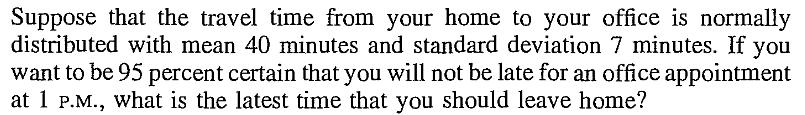
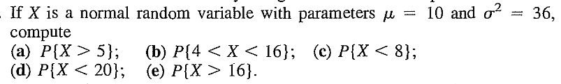
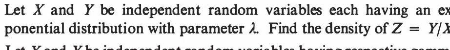

|
|---|
EXERCISE 1: For particular values of $a,b$ we get the $Unif(0,1)$ distribution. Which values?
The beta densities show a wide variety of shapes.EXERCISE 2: If $X\sim Beta(a,b)$, then exactly one of the two statements is correct in general. Which one?
EXERCISE 3: If $X\sim Beta(a,b)$, then find $V(X).$
EXERCISE 4: If $X\sim Beta(a,b)$ then show that $1-X\sim Beta(b,a).$
Proof: $\int_0^\infty \frac{x}{1+x^2}dx\sim \int_0^\infty \frac 1xdx = \infty.$ [QED]
EXERCISE 5: Show that if $X$ and $Y$ are independent Cauchy random variables, then for any $a\in[0,1]$ $aX+(1-a)Y$ is also a Cauchy variate. Hence conclude that if $X_1,...,X_n$ are IID Cauchy, then $\overline X$ is also Cauchy.
EXERCISE 6: How can you generate a Cauchy random variable from a $Unif(0,1)$ random variable?
EXERCISE 7: Consider the unit semicircle shown below.
|
|---|
EXERCISE 8: If $X$ is a Cauchy random variable, then show that $\frac 1X$ is also a Cauchy random variable.
 |
|---|
| $\mu$ controls centre, $\sigma$ controls spread |
Proof: Directly from Jacobian formula. [QED]
A corollary is the following theorem. The transformation from $X$ to $\frac{X-\mu}{\sigma}$ is called standardisation.EXERCISE 9: If $X\sim N(0,1),$ then express the following probabilities in terms of $\Phi(\cdot).$
EXERCISE 10: If $X\sim N(2,3^2),$ then express the following probabilities in terms of $\Phi(\cdot).$
EXERCISE 11: If $\Phi ^{-1}(0.95)=1.64$, then find $c\in{\mathbb R}$ such that $P(|X-1|>c) = 0.1 $ where $X\sim N(1,1^2).$
EXERCISE 12: [rossdistrib1.png]
EXERCISE 13: [rossdistrib2.png]
EXERCISE 14: [rossdistrib3.png]
EXERCISE 15: [rossdistrib4.png]
::
EXERCISE 16: [rossdistrib5.png]
EXERCISE 17: [rossdistrib6.png]
::
EXERCISE 18: [rossdistrib7.png]
EXERCISE 19: [rossdistrib8.png]
EXERCISE 20: [rossdistrib9.png]
::
EXERCISE 21: [rossdistrib10.png]
EXERCISE 22: [rossdistrib11.png]
EXERCISE 23: [rossdistrib12.png]
::EXERCISE 24: [rossdistrib13.png]
::
EXERCISE 25: [rossdistrib14.png]
EXERCISE 26: [rossdistrib15.png]
::
EXERCISE 27: [rossdistrib16.png]
EXERCISE 28: [rossdistrib17.png]
EXERCISE 29: [rossdistrib18.png]
::
EXERCISE 30: [rossdistrib19.png]
EXERCISE 31: [rossdistrib20.png]
::
EXERCISE 32: [rossdistrib21.png]
EXERCISE 33: [rossdistrib22.png]
EXERCISE 34: [rossdistrib23.png]
EXERCISE 35: [rossdistrib24.png]
::
EXERCISE 36: [rossdistrib25.png]
EXERCISE 37: [rossdistrib26.png]
EXERCISE 38: [rossdistrib27.png]
::
EXERCISE 39: [rossdistrib28.png]
EXERCISE 40: [rossdistrib29.png]
::
EXERCISE 41: [rossdistrib30.png]
EXERCISE 42: [rossdistrib31.png]
::EXERCISE 43: [rossdistrib32.png]
::EXERCISE 44: [rossdistrib33.png]
::EXERCISE 45: [rossdistrib34.png]
::
EXERCISE 46: [rossdistrib35.png]
EXERCISE 47: [rossdistrib36.png]
EXERCISE 48: [rossdistrib37.png]
EXERCISE 49: [rosspdf9.png]
EXERCISE 50: [rosspdf15.png]
::
EXERCISE 51: [hpspdf21.png]
EXERCISE 52: [hpspdf23.png]
EXERCISE 53: [hpspdf25.png]
::EXERCISE 54: [hpspdf27.png]
--- ::
EXERCISE 55: [hpspdf28.png]
EXERCISE 56: [hpspdf29.png]
EXERCISE 57: [hpspdf30.png]
::
EXERCISE 58: [hpspdf31.png]
EXERCISE 59: [hpspdf32.png]
EXERCISE 60: [hpspdf33.png]
::EXERCISE 61: [hpspdf34.png]
::
EXERCISE 62: [hpspdf35.png]
EXERCISE 63: [hpspdf36.png]
::
EXERCISE 64: [hpspdf37.png]
EXERCISE 65: [hpspdf38.png]
EXERCISE 66: [hpspdf39.png]
EXERCISE 67: [hpspdf41.png]
EXERCISE 68: [hpspdf42.png]
::EXERCISE 69: [hpspdf43.png]
::
EXERCISE 70: [hpspdf44.png]
EXERCISE 71: [hpstrans3.png]
EXERCISE 72: [hpstrans6.png]
EXERCISE 73: [hpstrans10.png]
EXERCISE 74: [hpstrans11.png]
EXERCISE 75: [hpstrans13.png]
EXERCISE 76: [hpstrans15.png]
::
EXERCISE 77: [hpstrans16.png]
EXERCISE 78: [hpstrans17.png]
EXERCISE 79: [hpstrans18.png]
EXERCISE 80: [hpstrans20.png]
EXERCISE 81: [hpstrans22.png]
EXERCISE 82: [hpstrans25.png]
EXERCISE 83: [hpstrans26.png]